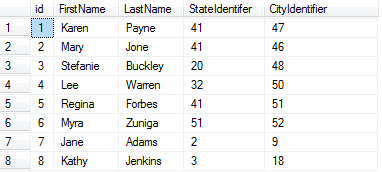
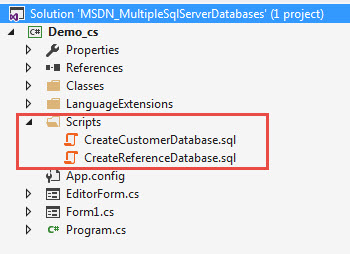

Using multiple SQL-Server databases in a solution
Description
This code sample demonstrates using multiple SQL-Server databases for application development. The main idea here is to have a database that its sole purpose is for reference tables that are common to many applications. For this example, I’ve kept things simple, a database that stores state and city information where other applications that stored data on the server can access this information. A common situation might be that we have a list of customers that have a requirement to store contact information such as address and communication details which when done correctly we need to have table for the customer main details, another table for address and another table for communications. I avoided this for an example as it would make it harder to learn as there are complexities such as if the customers cross multiple businesses we need to add a field to distinguish this while keeping it simple with customers, state and city is easier to follow along.
Let's look at the databases and tables.
Below the database has two tables, one for states and one for cities which is linked to the state table by StateIdentifier.

Next is a table in another database where we have two fields that match up to the tables above, StateIdentifier and CityIdentifier

So what we have is in customers when viewing in SQL-Server Management Studio.

Now let's look at (before peeking at the code) a DataGridView with the data.

Now let's look at how the query was created in SQL-Server Management Studio, you can do this in Visual Studio also but not as easy and to be honest I used Red Gate SQL-Prompt addin which works in Management Studio and Visual Studio.
First I created a SELECT query to span both databases using joins so that we get back city and state names.
SELECT C.FirstName ,
C.LastName ,
C.StateIdentifer ,
C.CityIdentifier ,
us.Name AS State ,
uc.CityName AS City ,
C.id
FROM Customers AS C
LEFT OUTER JOIN CityStateReferences.dbo.US_States AS us ON C.StateIdentifer = us.StateIdentifier
LEFT OUTER JOIN CityStateReferences.dbo.US_Cities AS uc ON uc.CityIdentifier = C.CityIdentifier
SELECT C.FirstName , C.LastName , C.StateIdentifer , C.CityIdentifier , us.Name AS State , uc.CityName AS City , C.id FROM Customers AS C LEFT OUTER JOIN CityStateReferences.dbo.US_States AS us ON C.StateIdentifer = us.StateIdentifier LEFT OUTER JOIN CityStateReferences.dbo.US_Cities AS uc ON uc.CityIdentifier = C.CityIdentifier

The code begins in a class with multiple connection strings, one for each database.
ServerName = "KARENS-PC";
ConnectionString = $"Data Source={ServerName};Initial Catalog=CustomersForCodeSample;Integrated Security=True";
ReferenceConnectionString = $"Data Source={ServerName};Initial Catalog=CityStateReferences;Integrated Security=True";
ServerName = "KARENS-PC"; ConnectionString = $"Data Source={ServerName};Initial Catalog=CustomersForCodeSample;Integrated Security=True"; ReferenceConnectionString = $"Data Source={ServerName};Initial Catalog=CityStateReferences;Integrated Security=True";
Requesting the data in a method in the operations class. I simply copied the SQL statement from Management Studio into the CommandText for the SqlCommand object. One a DataTable has been loaded several fields are marked as hidden so they are not displayed in the DataGridView. Please note that the DataGridView has no pre-defined columns so in this case we can't set visible property of the columns because they don't exists exit. I favor this when possible because if the form becomes corrupt you can use a new form, place the DataGridView, BindingSource onto that form with the code written and we are back in business.
public bool GetCustomers()
{
var success = false;
CustomersTable = new DataTable();
using (SqlConnection cn = new SqlConnection { ConnectionString = ConnectionString })
{
using (SqlCommand cmd = new SqlCommand { Connection = cn})
{
cmd.CommandText = @"
SELECT C.id,
C.FirstName ,
C.LastName ,
C.CityIdentifier ,
C.StateIdentifer ,
uc.CityName AS City ,
us.Name AS State
FROM Customers AS C
LEFT OUTER JOIN CityStateReferences.dbo.US_States AS us ON C.StateIdentifer = us.StateIdentifier
LEFT OUTER JOIN CityStateReferences.dbo.US_Cities AS uc ON uc.CityIdentifier = C.CityIdentifier";
try
{
cn.Open();
CustomersTable.Load(cmd.ExecuteReader());
// field we want but not to show in the user interface
CustomersTable.Columns["id"].ColumnMapping = MappingType.Hidden;
CustomersTable.Columns["StateIdentifer"].ColumnMapping = MappingType.Hidden;
CustomersTable.Columns["CityIdentifier"].ColumnMapping = MappingType.Hidden;
// better to perform sort on client side
CustomersTable.DefaultView.Sort = "LastName";
success = true;
}
catch (Exception ex)
{
HasErrors = true;
ExceptionMessage = ex.Message;
}
}
}
return success;
}
public bool GetCustomers() { var success = false; CustomersTable = new DataTable(); using (SqlConnection cn = new SqlConnection { ConnectionString = ConnectionString }) { using (SqlCommand cmd = new SqlCommand { Connection = cn}) { cmd.CommandText = @" SELECT C.id, C.FirstName , C.LastName , C.CityIdentifier , C.StateIdentifer , uc.CityName AS City , us.Name AS State FROM Customers AS C LEFT OUTER JOIN CityStateReferences.dbo.US_States AS us ON C.StateIdentifer = us.StateIdentifier LEFT OUTER JOIN CityStateReferences.dbo.US_Cities AS uc ON uc.CityIdentifier = C.CityIdentifier"; try { cn.Open(); CustomersTable.Load(cmd.ExecuteReader()); // field we want but not to show in the user interface CustomersTable.Columns["id"].ColumnMapping = MappingType.Hidden; CustomersTable.Columns["StateIdentifer"].ColumnMapping = MappingType.Hidden; CustomersTable.Columns["CityIdentifier"].ColumnMapping = MappingType.Hidden; // better to perform sort on client side CustomersTable.DefaultView.Sort = "LastName"; success = true; } catch (Exception ex) { HasErrors = true; ExceptionMessage = ex.Message; } } } return success; }
So all is well with displaying existing data, now let's think about adding new data in a simple format. The focus here is on setting the state and city for a new customer.

When examing the code in the Operation class I've setup methods to get cities and states by first writing the queries in Management Studio and testing them to ensure they work so if they fail in the project we know it's not server side problems.
Example, get cities for Oregon (in the app we can pare down the fields returned)
SELECT C.CityIdentifier ,
C.CityName ,
us.Name ,
us.Abbreviation
FROM CityStateReferences.dbo.US_Cities AS C
LEFT OUTER JOIN CityStateReferences.dbo.US_States AS us ON C.StateIdentifier = us.StateIdentifier
WHERE ( C.StateIdentifier = 41 );
SELECT C.CityIdentifier ,
C.CityName ,
us.Name ,
us.Abbreviation
FROM CityStateReferences.dbo.US_Cities AS C
LEFT OUTER JOIN CityStateReferences.dbo.US_States AS us ON C.StateIdentifier = us.StateIdentifier
WHERE ( C.StateIdentifier = 41 );
private void cboState_SelectedIndexChanged(object sender, EventArgs e)
{
cboCity.DataSource = null;
cboCity.DisplayMember = "";
// fix bug with ComboBox reload
cboCity.Items.Add("");
cboCity.Items.Clear();
var id = ((State)cboState.SelectedItem).StateIdentifier;
var result = cities.Where(city => city.StateIdentifier == id).ToList();
if (result.Count >0 && result.First().Name != "Select one")
{
result.Insert(0, new City { CityIdentifier = 0, Name = "Select one" });
cboCity.DataSource = result;
cboCity.DisplayMember = "Name";
}
}
private void cboState_SelectedIndexChanged(object sender, EventArgs e) { cboCity.DataSource = null; cboCity.DisplayMember = ""; // fix bug with ComboBox reload cboCity.Items.Add(""); cboCity.Items.Clear(); var id = ((State)cboState.SelectedItem).StateIdentifier; var result = cities.Where(city => city.StateIdentifier == id).ToList(); if (result.Count >0 && result.First().Name != "Select one") { result.Insert(0, new City { CityIdentifier = 0, Name = "Select one" }); cboCity.DataSource = result; cboCity.DisplayMember = "Name"; } }
Next thing of importance, since we are not strong typed like in Enity Framework I wrote language exension methods to make life easier so that to get at say a CityIdentifier for the current row in the DataGridView we can write bsData.CityIdentifier rather than introduce the casting.
To round things out, focus more on the idea of having reference databases for multiple solutions and not so much on the code as this could had been an ASP.NET, WPF etc solution. At my work place we have many applications sharing reference databases where none of the applications know or can access the other applications data.
More Information
Before attempting to run the project you need to run the scipts below. They will create both databases and populate them with data. Please note not all states have cities so if you pick a state with no cities that is by design or should I say I didn't want to write out that many cities.
